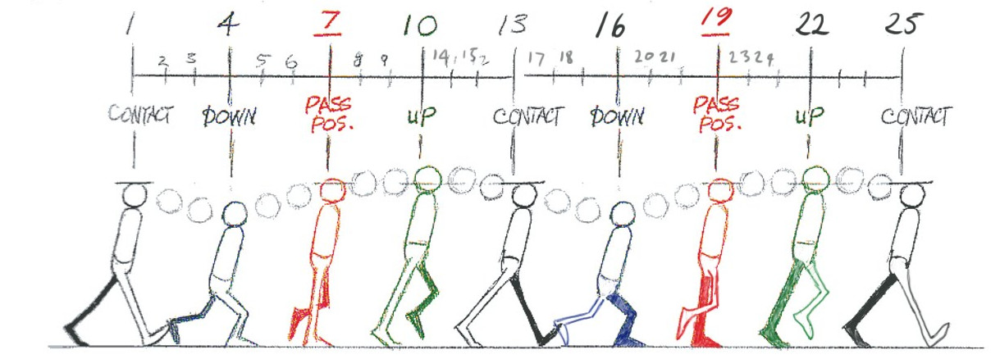
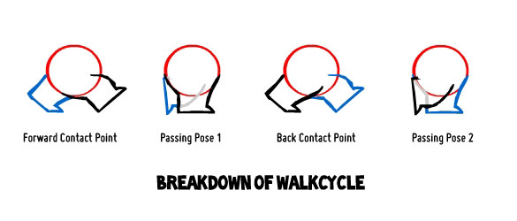
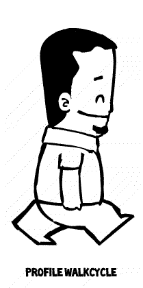
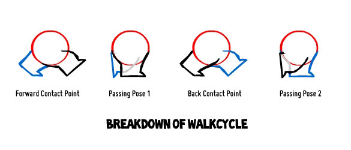
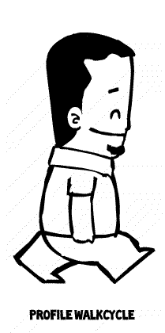
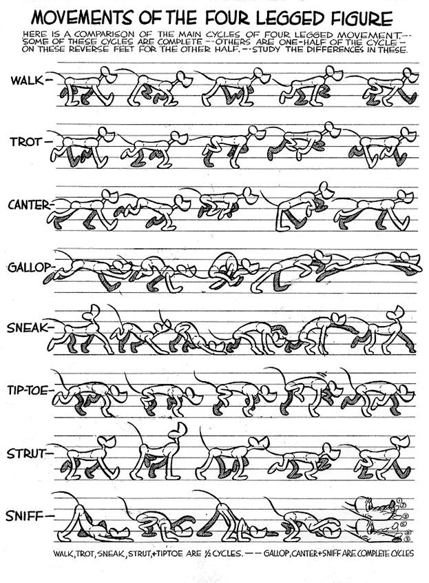
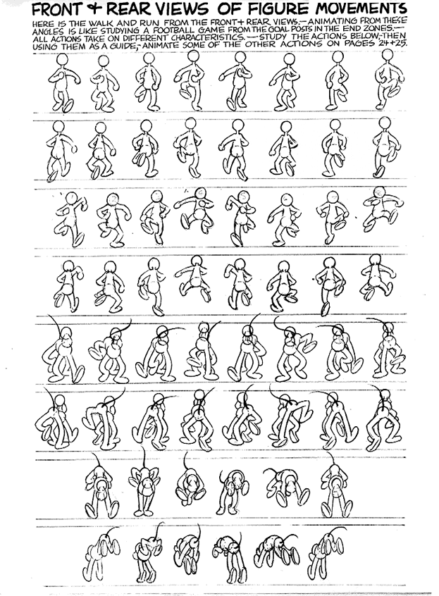

Anatomia de um Walk cycle
Definição
No contexto da animação, walk cycle (ciclo de caminhada) é o nome atribuído a uma sequência de frames ou desenhos que representam uma personagem a andar/caminhar quando exibidos em ciclo (em loop).
Componentes de um Walk cycle
Seguindo a tradição do desenho animado, o walk cycle pode ser descrito através da utilização de 4 poses distintas (keyframes):
- contact
- down (também designada por recoil)
- passing
- up (também designada por high point)
Estas 4 poses são repetidas em modo invertido para criar um ciclo completo (duas pernas). No exemplo abaixo, o ciclo completo (duas pernas) é criado com 8 poses (4 poses + 4 poses invertidas), a 9ª pose é igual à 1ª.
Isto não significa que o walk cycle seja construído apenas com 4 ou 8 frames! Na realidade, existem frames intermédias (in-betweens) que podem ser desenhadas, animadas manualmente ou animadas automaticamente prolo computador através de interpolação (tweening). No exemplo abaixo, o ciclo completo (duas pernas) é criado com 24 frames, a 25ª frame é igual à 1ª frame.
O walk cycle não é criado apenas com a ilusão do movimento das pernas. Na realidade, para além do movimento das pernas, um walk cycle convincente necessita de animação no restante corpo (tronco, cabeça, braços, etc.) e especial cuidado com os tempos. No exemplo abaixo, atente nos arcos criados com o movimento pendular do corpo.
 Imagem publicada em Williams, R. (2009). The Animator's Survival Kit, Expanded Edition: A Manual of Methods, Principles and Formulas for Classical, Computer, Games, Stop Motion and Internet Animators. Londres: Faber and Faber.
Sacrificando qualidade e realismo (mas ganhando rapidez e simplicidade de processos), é possível simplificar o walk cycle. No exemplo abaixo, são utilizadas 2 poses (contact e passing). O ciclo completo (duas pernas) é criado com 4 poses (2 poses + 2 poses invertidas), a 5ª pose é igual à 1ª.
 

Imagens de Ajaykarat, publicadas em Walk cycle@Wikipedia


Imagens de Ajaykarat, publicadas em Walk cycle@Wikipedia
Recomendações para a construção de um Walk Cycle
1. Geralmente, o processo de criação de um walk cycle inicia-se com a criação das 4 poses principais: contact, down (recoil), passing e up (high point).
- Contact
- É a primeira pose, constitui o princípio e o final de cada passo/passada. Peso divido entre as pernas. É o momento em que a perna está mais esticada (mas tente evitar o totalmente esticada e direita! introduza um joelho ligeiramente dobrado) e o pé entra em contato com o solo.
- Down (recoil)
- O peso da personagem desloca-se e passa a ser suportado pelo pé em contato com o solo. O caminhante vem abaixo, desce. É a posição mais baixa no ciclo.
- Passing
- É a pose em que as pernas passam uma pela outra. A personagem está em trajetória ascendente, o peso está todo na perna/pé de suporte (em contato com o solo) enquanto a outra perna/pé está no ar.
- Up (high point)
- Ponto mais alto do ciclo. O calcanhar do pé de suporte já está no ar e a outra perna/pé prepara-se para atacar o solo. Peso da personagem puxa à frente.
2. Após definir as primeiras 4 poses, repita o processo, invertendo as pernas, para obter o ciclo completo.
3. Tenha em atenção o movimento vertical (Cima-Baixo), os arcos da passada, a onda. É comum abordar o movimento vertical das ancas/quadris da personagem como se fosse uma bola saltitante, tentando replicar as acelerações/desacelerações.
4. Refinar a deslocação lateral do peso, ter em atenção o movimento lateral das ancas/quadris. Durante a caminhada, o peso da personagem desloca-se lateralmente.
5. Introduzir rotação no peito. Ninguém caminha mantendo o peito totalmente plano. Esta animação prolonga-se até aos braços. Pense numa cadeia de movimentos que se inicia no peito, continua (propaga-se) pelos ombros, braços, mãos, dedos. Na pose de Contact, o braço que fica à frente do corpo é o do lado da perna que está atrás.
Outras imagens de referência
.gif) Imagem publicada em Blair, P. (1994). Cartoon Animation. Walter Foster Publishing.
Imagem publicada em Blair, P. (1994). Cartoon Animation. Walter Foster Publishing.
 Imagem publicada em Blair, P. (1994). Cartoon Animation. Walter Foster Publishing.
 Imagem publicada em Blair, P. (1994). Cartoon Animation. Walter Foster Publishing.
Material adicional recomendado
Altamente recomendado:Simulador online de walk cycles
A Simple Method for creating Walk Cycles